(01)
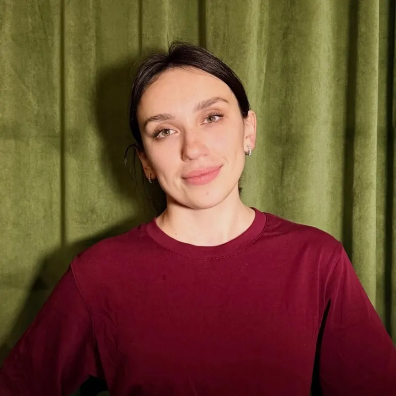
Анастасия
(01)Чистый маникюр и покрытие под кутикулу — тонко и аккуратно.
Записаться к АнастасииСтудия маникюра и педикюра в 3 минутах от метро «Трубная». Выберите услугу и запишитесь онлайн в YCLIENTS
Ваши будущие бэсти — знакомьтесь заранее

Чистый маникюр и покрытие под кутикулу — тонко и аккуратно.
Записаться к Анастасии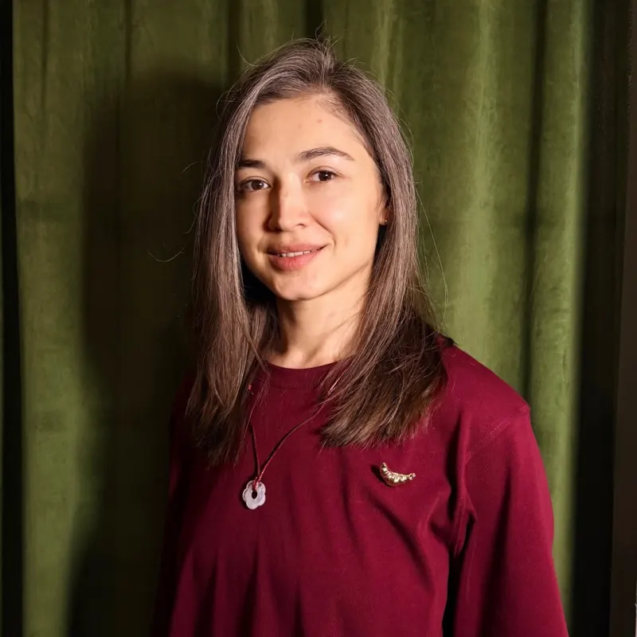
Эстетический и японский маникюр. Работает только с короткой длиной.
Записаться к НаташеАрхитектура ногтя: наращивание и укрепление гелем, подбор длины и формы.
Записаться к Адель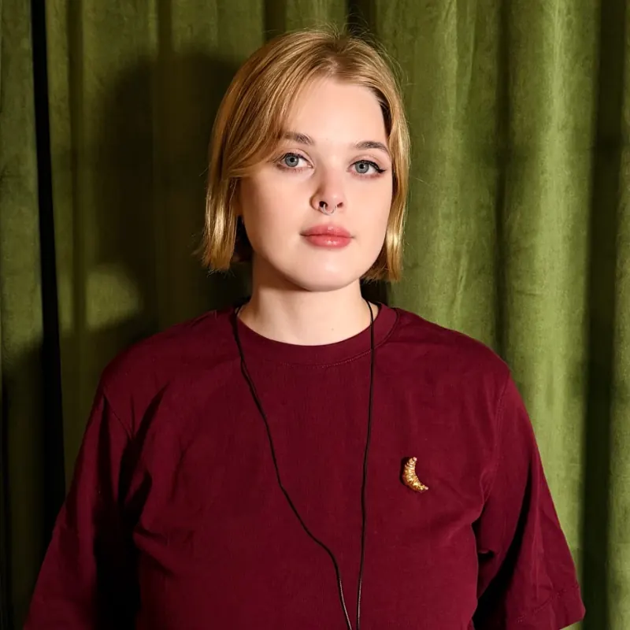
Быстро и аккуратно — когда хочется красивый результат и сэкономить время.
Записаться к КатеБережное покрытие гель-лаком и укрепление гелем на каждый день.
Записаться к Мари«Бэсти — это лучшая подруга. Такое место мне и хотелось создать»
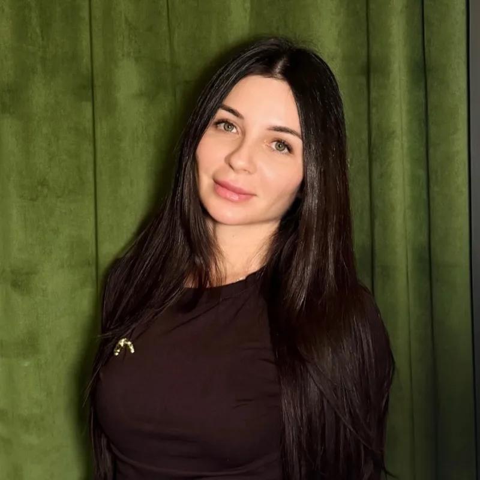
Я хотела студию, куда приходят не только за маникюром. Где тебя помнят по имени, знают, какую форму ногтей ты любишь, и сразу предлагают кофе.
Иногда гостей встречаю я сама: показываю студию, приношу меню напитков. Сама я делаю брови, а маникюр и педикюр — работа наших мастеров.
Пока мастер работает, можно включить фильм на планшете, а в конце сделать массаж рук. Из таких мелочей и складывается ощущение, что ты пришла к подруге.
Заходите в гости
Зухра
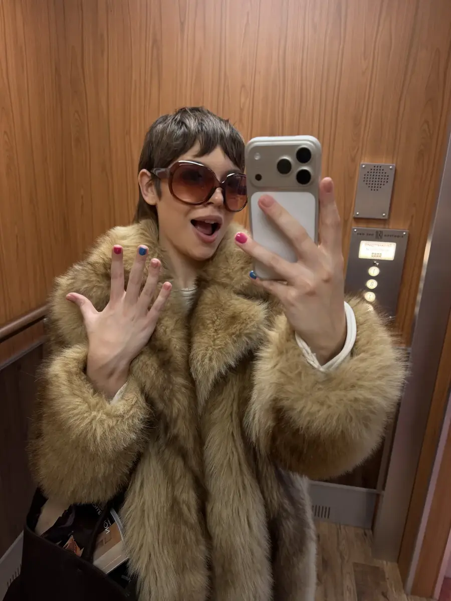
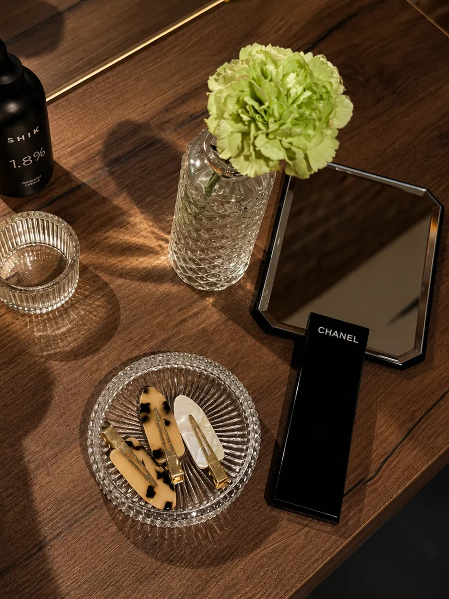
(a) атмосфера
Кирпичные стены, красный ковёр и зелёные бархатные кресла
Студия в Печатниковом переулке, в трёх минутах от «Трубной». Рядом «Золотое Яблоко» и рестораны — можно устроить себе бьюти-день.
как у лучшей подруги
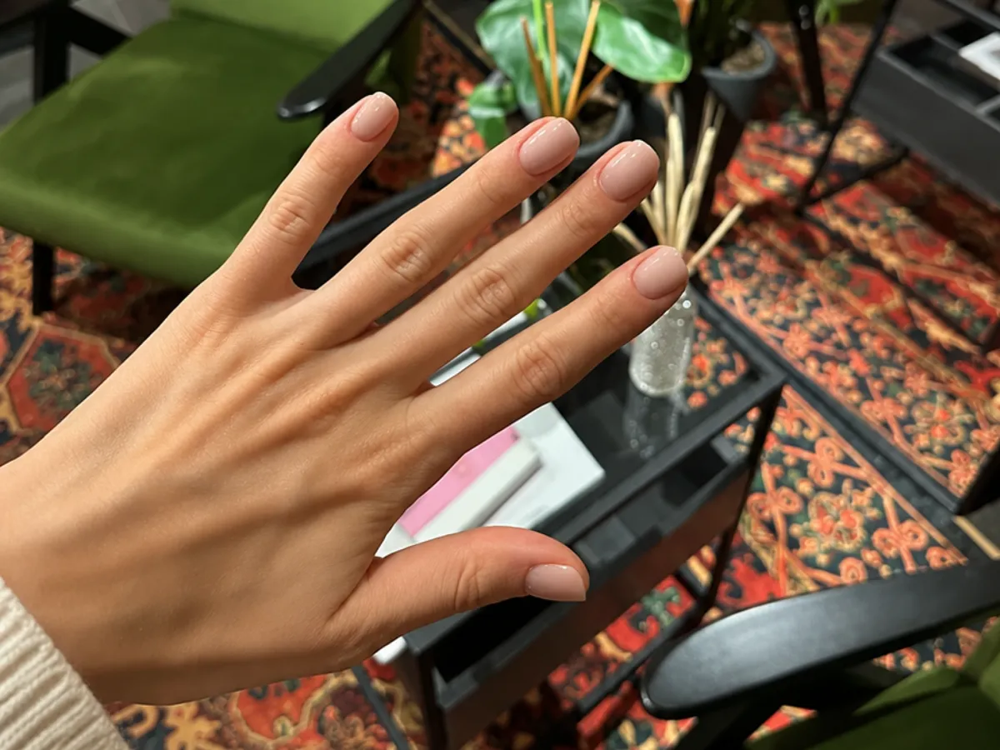
(b) мы угощаем
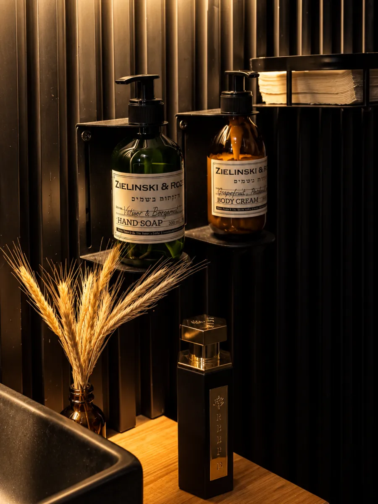
(c) кресло с кино
Персональный планшет с наушниками
Пока мастер работает, время в студии проходит незаметно.
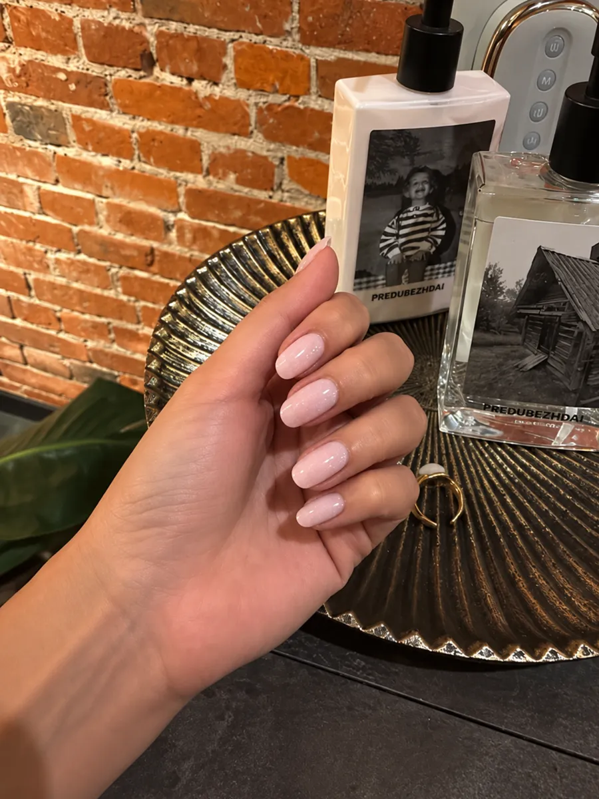
(d) стерильно
Инструменты распаковывают при вас
Из стерильного пакета, на ваших глазах. Покрытие — палитра Luxio.
Записаться онлайнПалитра Luxio большая — гостьи пишут, что глаза разбегаются
 Нажмите, чтобы увидеть больше отзывов
Нажмите, чтобы увидеть больше отзывов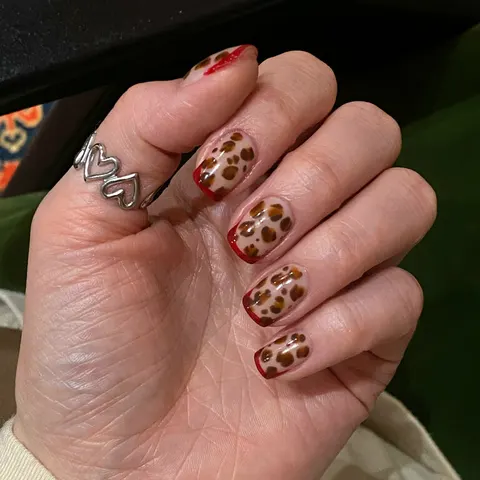
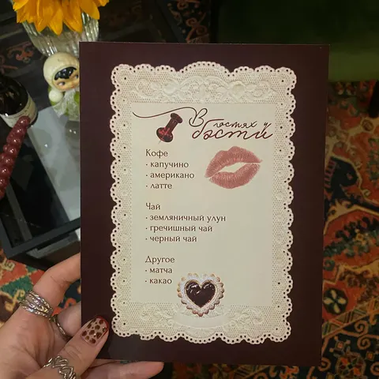
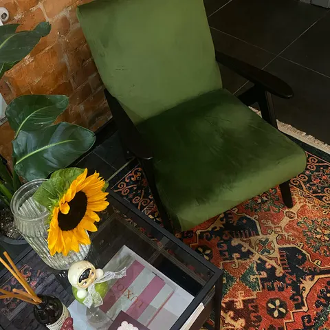
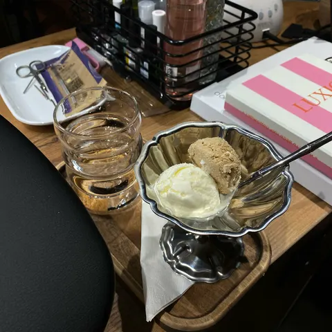
девочки, я в экстазе!🤤
сегодня у меня был вечер принцессы)
я записалась на маникюр со сложным дизайном и вдобавок сверху френч, мастер Ксения справилась за 1.40 минут, это ваааау!
на входе меня встретила лично владелица студии, показала мне студию, предложила меню с напитками, ещё и мороженым угостила! и все это комплиментом🥹 а какая милая!
отдельно отмечу интерьер и дизайн студии: уже надоели бежевые минималистичные пространства, а здесь яркие детали, зеленые кресла, ковер на полу и кирпичные стены😍
по телевизору идут всеми нами любимые фильмы!
перед уходом мне предложили массаж рук специальной перчаткой, я такого ещё нигде не видела, это удивительно, но очень приятно и как же расслабляет)
еще подарили бальзамчик для губ и стикеры, мой внутренний ребенок ликует
я вернусь еще много раз, ради наслаждения❤️
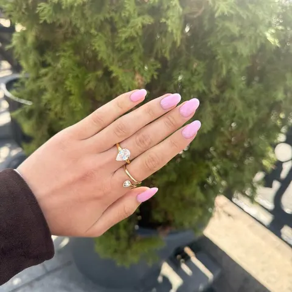
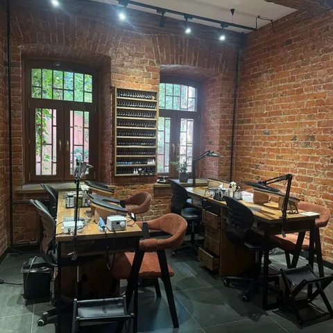
Впервые была в этом салоне и осталась в диком восторге! Локация очень удобная,самый центр Москвы,сервис 10/10,качество услуги так же. Комплекс маникюра с покрытием и снятием сделали за 1,5ч. В конце процедуры предложили спа для рук. Так же удивило комплиментарное меню,большой выбор напитков,также есть десерты. Сама студия с очень уютным дизайном в стиле лофт. Обязательно буду советовать подругам !
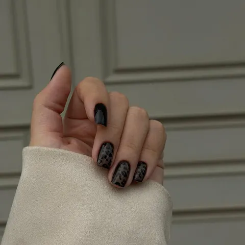
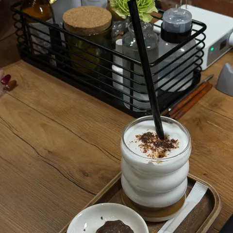
Чудесный салон с прекрасным отношением к своим гостям! ✨✨✨ очень вкусный кофе и зефир. Маникюр идеальный, самый аккуратный и нежный мастер в моей жизни, не заметила как делали даже! Очень красиво вышло, как я и хотела. Подход максимально клиентоориентированный, девочки под меня заказали лак, запомнили какой маникюр я хочу и как меня зовут. Очень приятно ❣️❣️❣️
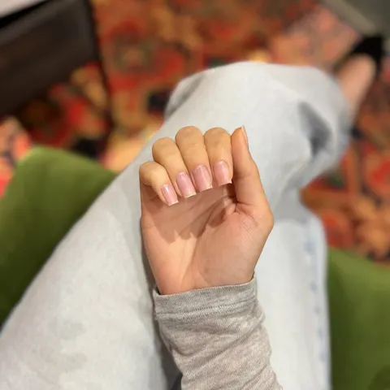
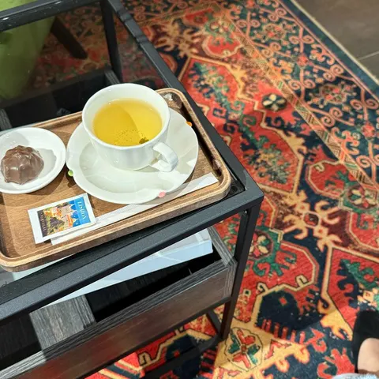
Мне очень понравилось здесь 🤍
Долго искала студию без светлого интерьера, который уже везде и немного приелся. А здесь все совсем по другому, очень красиво и уютно, хочется возвращаться)
Отдельно хочу отметить администратора! Безумно классная девушка, видно, что правда любит свое дело и заботится о гостях. Чай нальют, перчатку для массажа рук бесплатно дадут, в общем, сделают все для вашего комфорта 😅
В этот раз решила сделать лечебный маникюр, потому что ногти уже очень просили снять покрытие
Желаю студии процветания и побольше классных клиентов))
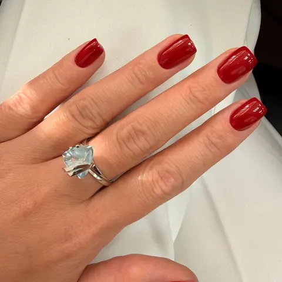
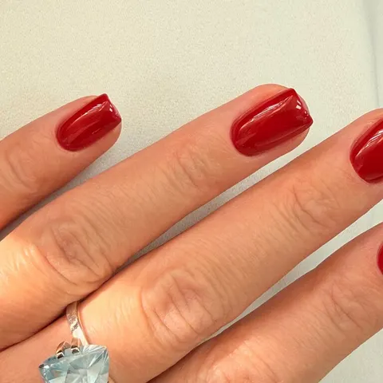
Потрясающая студия!
Была на маникюре и получила наслаждение от обстановки, невероятно милых и приятных девушек-мастеров и администратора, а самое главное от качества работы - покрытие ровное, кутикула обработана аккуратно, инструменты в стерильных пакетах, мастер заботится о клиенте во время процедуры. В завершении предложили сделать массаж рук специальным массажером - очень приятно от такого сервиса.
Также могу отметить что администратор несколько раз предлагала напитки чай, кофе (молоко есть как обычное, так и растительное).
Студия превзошла все ожидания🤍
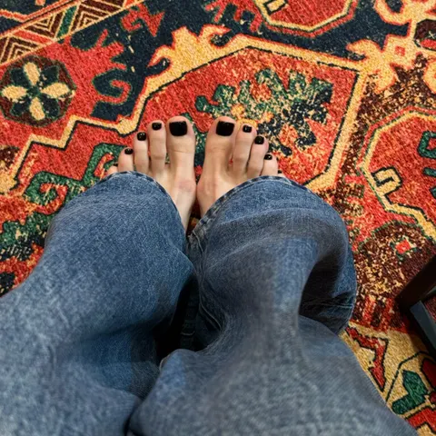
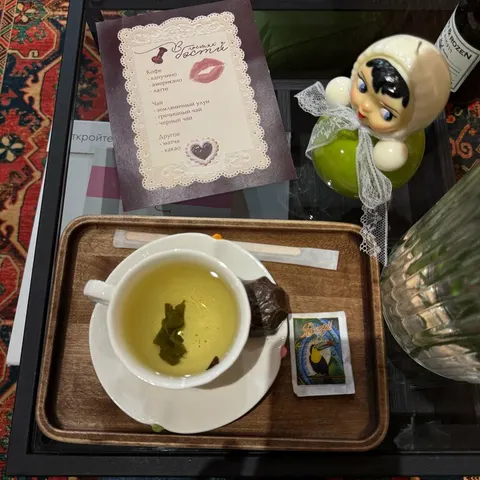
Очень понравилась студия: камерная и уютная, с приятной атмосферой, отличным сервисом (даже мороженым угощают 🍨) и очень удобным расположением (5 минут пешком от метро Трубная). Делала педикюр, все прошло прекрасно, хотя я очень требовательный клиент из-за чувствительности кожи. Ушла в отличном настроении и со свежим педикюром 🌸
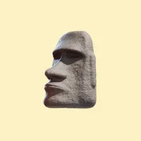
violettavitmanЗнаток города 7 уровня · 04.09.2026Печатников пер., 6
1 этаж · 3 минуты от метро «Трубная»